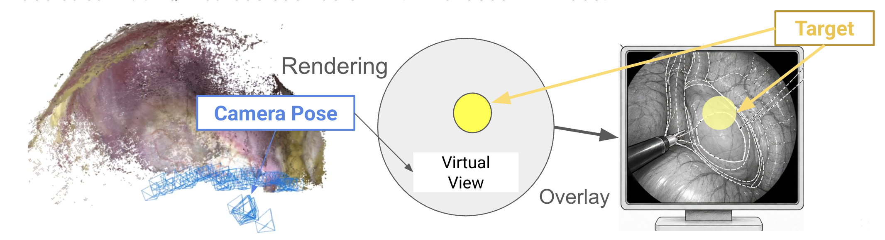
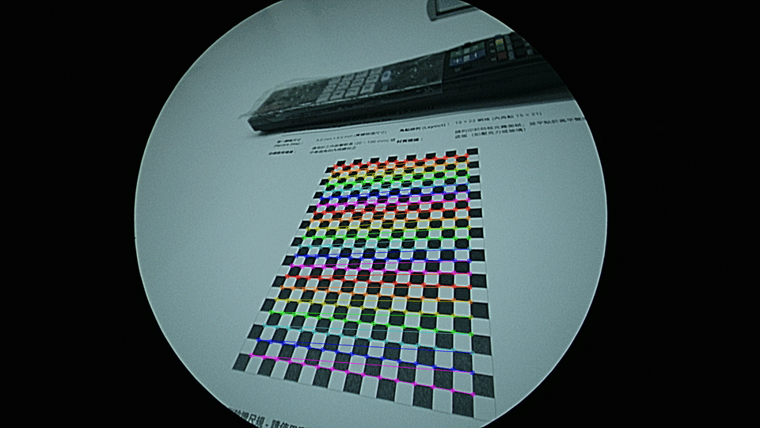
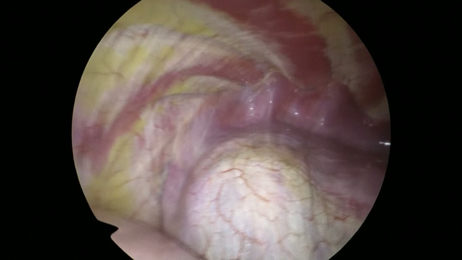

電腦視覺 · Selected Work · 2026
OpVerse — Lung SLAM
NTU imLab OpVerse 專案的一環： 實驗室已有「把虛擬器官疊合到病人身上」的 AR 技術，但必須戴著 VR 頭盔操作。 這個子專案要做的是把 DROID-SLAM 應用在胸腔內視鏡影片上， 抽換掉官方的 keyframe 篩選機制、改用自訂的高反光／動態模糊偵測， 從單眼內視鏡影片重建相機軌跡與稀疏 3D 點雲， 未來可以不戴頭盔、直接在外接螢幕的內視鏡畫面上標出虛擬腫瘤位置。

製作背景
實驗室在 OpVerse 專案中已經有一套「把虛擬器官疊合到真實病人身上」的技術， 能讓醫師在術前戴著 VR 頭盔「透視」病人體內的腫瘤位置。但這套技術必須戴著頭盔操作， 不方便在手術過程中持續使用。如果能把虛擬器官疊合直接接到內視鏡影像上， 就能不靠頭盔、直接在外接螢幕上看到虛擬器官與腫瘤位置—— 而要做到這件事，第一步得先解決「內視鏡在病人體內的即時位置」怎麼算出來，這正是這個子專案的範圍。
目標與技術選型
第一階段的目標很明確：從單眼胸腔內視鏡影片恢復相機在世界座標下的 6-DoF 軌跡與場景的稀疏 3D 點雲，不做稠密 mesh、不做呼吸造成的 4D 形變建模、也不做跟術前 CT 的配準——那些都是後續階段的範圍。 SLAM backbone 選用 DROID-SLAM：它是學習型（learning-based）方法， 對內視鏡這種低紋理（textureless）、光源隨鏡頭移動的場景比傳統幾何法穩健， 代價是整條 pipeline 都要 CUDA，只能在有 GPU 的機器上跑最後這一步。
1. Preprocess：圓形視野偵測與去畸變裁切
內視鏡影像是一個圓形視野（circular FOV）嵌在黑色畫面中央，邊緣扭曲嚴重。
Preprocess 階段對前 30 張取樣影格做圓形偵測（灰階門檻 + 最大連通元件 +
minEnclosingCircle），
取中位數當作穩健估計，再把半徑往內縮一個比例（預設 15%）丟掉扭曲最嚴重的邊緣，
最後裁切成內接正方形——這樣輸出就是 100% 相容官方 DROID-SLAM
demo.py
的矩形影格，不需要額外的 mask 輸入。
Camera Calibration
用印出來的棋盤格（10×22 內角點）在內視鏡下多角度拍攝約 20 張照片， 用 OpenCV 分別跑 5-param（k1,k2,p1,p2,k3 全自由）與 4-param（固定 k3=0）兩組模型比較：內視鏡圓形視野的徑向資料範圍不夠大， k3 通常在擬合雜訊而非真實畸變，兩組 RMS 誤差相差在 5% 以內時就選 4-param。 這批資料的結果是 RMS ≈ 0.52 px（5-param）/ 0.53 px（4-param）， 差距 3.3%，確認可以用較簡單的 4-param 模型。

2. 自訂 Bad-frame Filter：符合胸腔內視鏡的特性
原版 DROID-SLAM 是為一般場景設計的動作篩選（只看光流大小決定 keyframe）， 但胸腔內視鏡影片有兩個一般場景少見的特性：組織表面濕潤反光造成大片高光過曝、 以及器械或組織快速移動造成動態模糊——這兩種爛幀送進 SLAM 容易產生錯誤的特徵匹配， 拖累重建品質。這個專案在 DROID 的動作篩選之外，另外刻了一層依畫質篩選的 filter， 對每一幀在 FOV 範圍內算三個指標：
門檻是絕對數值（預設過曝 >140、太暗 <50、高光反射比例 >5%），
但同一台內視鏡不同片段的亮度中位數可以差到 30 以上，固定門檻某些片段會濾過頭、某些又濾不到，
所以實務上會先跑一次不濾的 filter 只為了拿 frame_metrics.csv，
看這支影片自己的分佈（亮度/高光抓 p90~p95，模糊度抓 p5~p10 當門檻）再決定真正要用的參數。
濾出來的乾淨幀之後可以全部當 keyframe（適合動作幅度小、怕篩過頭的片段），
或是疊加回 DROID 原生的動作篩選（適合動作幅度夠大的片段）——兩種模式都支援。

成果與現況
篩選後的影格丟進 DROID-SLAM 做學習型光流估計與 bundle adjustment，重建出相機軌跡與場景的稀疏彩色點雲：
Pipeline 的 preprocess／calibration／filter 三個階段已經在真實內視鏡素材上跑通並驗證： 圓形視野偵測穩定、真實 checkerboard 校正 RMS < 0.6 px、自訂 filter 能量化區分正常與過曝/高光影格。 因為沒有 ground truth 軌跡（沒有光學追蹤或機械臂座標可比對），評估先採計畫書訂的代用指標：
- Frame registration rate：成功 register 的影格數 / 全片有效影格數，目標 ≥ 80%
- Trajectory smoothness：相鄰姿態間的速度／角速度是否有異常跳躍
- Loop closure consistency：鏡頭來回掃過同一區域時，點雲是否對齊
- Visual sanity check：把稀疏點雲投影回影像，檢查是否落在合理的組織表面上
學到的事：把一套為一般場景設計的 learning-based SLAM 套用到醫療影像上， 真正的工程量不是換掉演算法，而是正確理解資料的物理特性——內視鏡的圓形視野、 邊緣扭曲、組織反光、呼吸造成的形變，每一個都會讓「直接套官方 demo.py」的結果看起來能跑， 實際上軌跡是錯的。自訂 filter 的門檻也再次印證：固定的絕對閾值在跨片段時不可靠， 得先看過資料自己的分佈，再決定要濾多嚴。